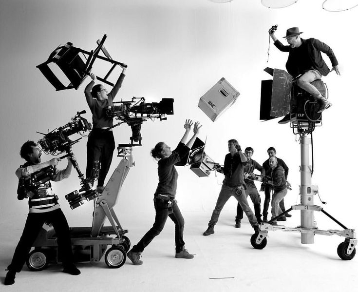

Drawing our name and our ethos from the four distinct compass points of Chicago, we view the city as our laboratory. We are a multidisciplinary collective that bridges the gap between traditional craftsmanship and cutting-edge technology. At Fourside, we believe the most compelling visual identities aren't just designed—they are engineered. By blending film, computer graphics, graphic design, and fine art, we create cohesive narratives that resonate across every medium and represent the multifaceted spirit of our home.
We don’t just use industry-standard tools; we build the future of our craft. A core pillar of our practice is the development of in-house, industry-leading creative technology. By merging custom software and experimental tools with traditional painting and design workflows, we push the boundaries of what is visually possible.

We transform abstract concepts into tangible visual languages, ensuring that every project is as functional as it is aesthetic.
Through our Systems of Identity, we do not just design logos; we construct foundational visual architectures that define how the world interacts with your brand.
Multidimensional Campaigns orchestrate immersive storytelling experiences, weaving together film, digital, and print to ensure your message hits from every angle. We also specialize in Bespoke Artistic Expression, creating one-of-a-kind art pieces that merge our signature technical experimentation with traditional fine art sensibilities. Furthermore, our focus on Technological Architecture allows us to solve complex design hurdles by building custom tools and pipelines, giving your projects a creative edge that cannot be replicated by standard software.